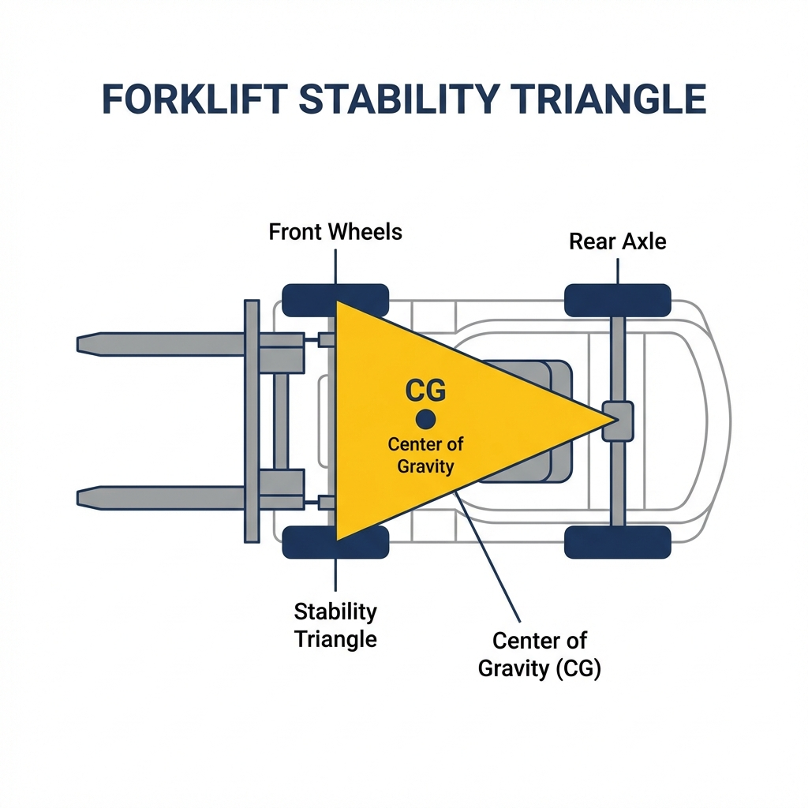
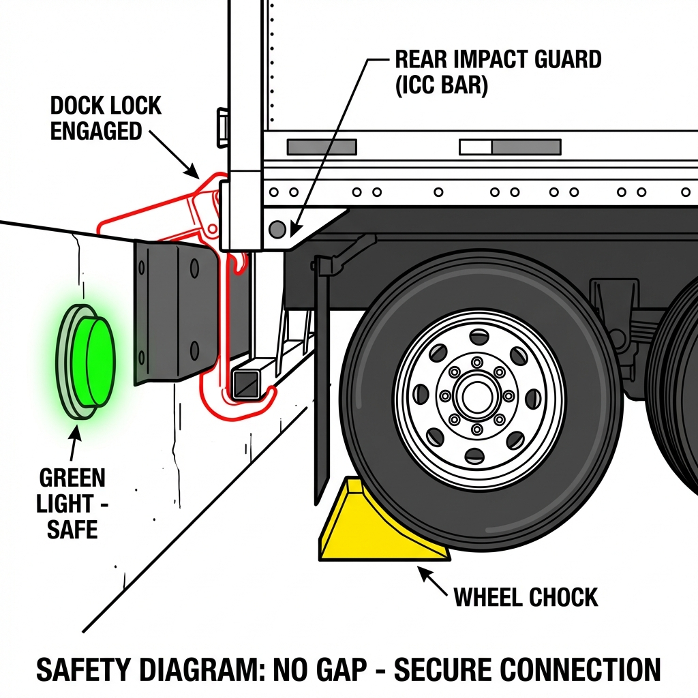
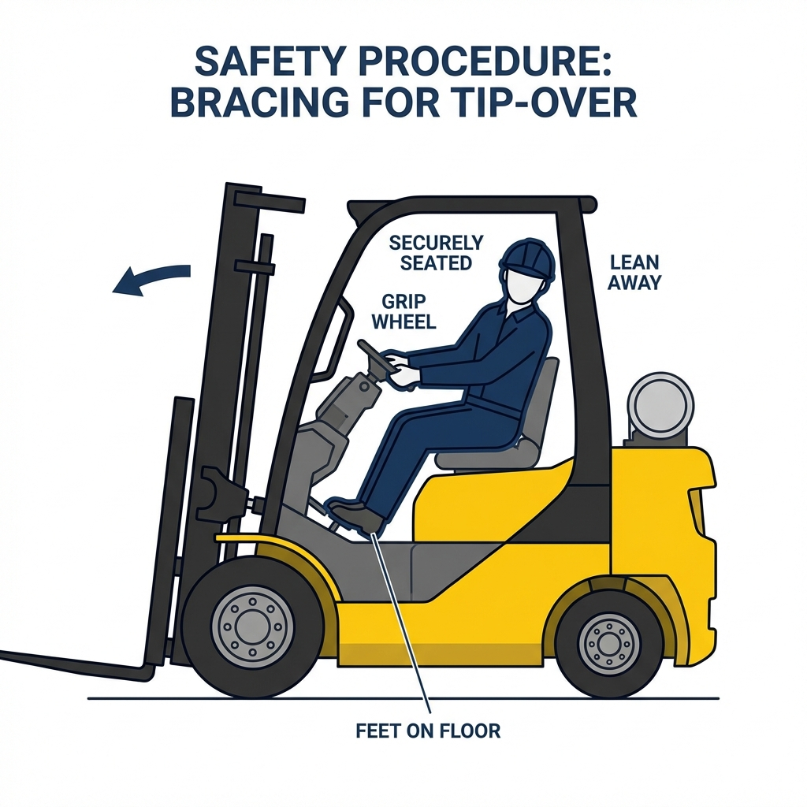

FORKLIFT
COMMANDER
Powered Industrial Truck
(PIT)
OSHA 1910.178 Training

Powered Industrial Truck
(PIT)
OSHA 1910.178 Training
You must have a wallet card ON YOUR PERSON to operate any lift.
No inspection = No driving. If it fails, tag it out.
Pedestrians always have the right of way. Even if they are wrong.

Center of Gravity (CG) must stay inside the triangle.

Wheels must be chocked.
Dock Lock engaged (Green Light).
Trailer stands used if uncoupled.

Q1: When do you inspect the forklift?
A: Before EVERY shift.
Q2: You are traveling down a ramp with a load?
A: Backup (Reverse).
Q3: What do you do in a tip-over?
A: Stay in the seat. Brace. Lean away.
Q4: How high should forks be when traveling?
A: 4-6 inches.
Operator Signature